Строительные нормы и правила
СНиП II-25-80
Деревянные конструкции
МОСКВА 1996
РАЗРАБОТАНЫ ЦНИИСК им. Кучеренко Госстроя СССР при участии ЦНИИПромзданий Госстроя СССР, ЦНИИЭП комплексов и зданий культуры, спорта и управления им. Б.С. Мезенцева Госгражданстроя, ЦНИИЭПсельстроя Минсельстроя СССР и Украинского отделения института Энергосетьпроект Минэнерго СССР.
С введением в действие настоящей главы СНиП утрачивает силу глава СНиП II-В.4-71.
Редакторы-инженеры Ф.М. Шлемин, Г.М. Хорин (Госстрой СССР); доктора техн. наук Я.Ф. Хлебной, Р.Р. Матевосян; кандидаты техн. наук Л.В. Касабьян, Е.М. Знаменский (ЦНИИСК им. Кучеренко Госстроя СССР), В.С. Шейнкман (ЦНИИПромзданий Госстроя СССР).
Изменение СНиП II-25-80 «Деревянные конструкции» принятое постановлением Госстроя СССР № 132 от 08.07.88 и введенное в действие с 01.01.89 внесено в текст документа, измененные пункты отмечены *.
|
Государственный комитет СССР |
Строительные нормы и правила |
СНиП II-25-80 |
|
Деревянные конструкции |
Взамен главы |
1.1. Нормы настоящей главы должны соблюдаться при проектировании деревянных конструкций новых и реконструируемых зданий и сооружений, а также при проектировании деревянных опор воздушных линий электропередачи.
Нормы не распространяются на проектирование деревянных конструкций гидротехнических сооружений, мостов, а также конструкций временных зданий и сооружений.
1.2. При проектировании деревянных конструкций следует предусматривать защиту их от увлажнения, биоповреждения, от коррозии (для конструкций, эксплуатируемых в условиях агрессивных сред) в соответствии с главой СНиП по проектированию защиты строительных конструкций от коррозии и от возгорания в соответствии с главой СНиП по противопожарным нормам проектирования зданий и сооружений.
1.3. Деревянные конструкции должны удовлетворять требованиям расчета по несущей способности (первая группа предельных состояний) и по деформациям, не препятствующим нормальной эксплуатации (вторая группа предельных состояний), с учетом характера и длительности действия нагрузок.
1.4. Деревянные конструкции следует проектировать с учетом их заводского изготовления, а также условий их эксплуатации, транспортировании и монтажа как поэлементно, так и укрупненными блоками.
1.5. Долговечность деревянных конструкций должна обеспечиваться конструктивными мерами в соответствии с указаниями разд. 6 настоящих норм и, в необходимых случаях, защитной обработкой, предусматривающей предохранение их от увлажнения, биоповреждения и возгорания.
1.6. Деревянные конструкции в условиях постоянного или периодического длительного нагрева допускается применять, если температура окружающего воздуха не превышает 50 °С для конструкций из неклееной и 35 °С для конструкций из клееной древесины.
1.7. Сорта древесины для изготовления деревянных конструкций, клеи, а также необходимые дополнительные требования к древесине в соответствии с прил. 1 должны указываться в рабочих чертежах.
2.1. Для изготовления деревянных конструкций следует применять древесину преимущественно хвойных пород. Древесину твердых лиственных пород следует использовать для нагелей, подушек и других ответственных деталей.
Примечание. Для конструкций деревянных опор воздушных линий электропередачи следует применять древесину сосны и лиственницы, а для конструкций опор линий электропередачи напряжением 35 кВ и ниже, за исключением элементов стоек и приставок, заглубленных в грунт, и траверс допускается применять древесину ели и пихты.
2.2. Древесина для несущих элементов деревянных конструкций должна удовлетворять требованиям 1, 2 и 3-го сорта по ГОСТ 8486-66*, ГОСТ 2695-71*, ГОСТ 9462-71*, ГОСТ 9463-72*, а также дополнительным требованиям, указанным в прил. 1.
Прочность древесины должна быть не ниже нормативных сопротивлений, приведенных в прил. 2.
|
Внесены |
Утверждены |
Срок |
В зависимости от температурно-влажностных условий эксплуатации к влажности древесины, применяемой в элементах конструкций, должны предъявляться требования, указанные в табл. 1. Зоны влажности, определяющие условия эксплуатации конструкций на открытом воздухе или внутри неотапливаемых помещений, следует принимать в соответствии с главой СНиП по строительной теплотехнике.
Таблица 1
|
Характеристика условий эксплуатации конструкций |
Максимальная влажность древесины для конструкций % |
||
|
из клееной древесины |
из неклееной древесины |
||
|
Внутри отапливаемых помещений при температуре до 35 С, относительной влажности воздуха |
|||
|
А1 |
до 60 % |
9 |
20 |
|
А2 |
свыше 60 до 75 % |
12 |
20 |
|
А3 |
свыше 75 до 95 % |
15 |
20 |
|
Внутри неотапливаемых помещений |
|||
|
Б1 |
в сухой зоне |
9 |
20 |
|
Б2 |
в нормальной зоне |
12 |
20 |
|
Б3 |
в сухой и нормальной зонах с постоянной влажностью в помещении более 75 % и во влажной зоне |
15 |
25 |
|
На открытом воздухе |
|||
|
В1 |
в сухой зоне |
9 |
20 |
|
В2 |
в нормальной зоне |
12 |
20 |
|
В3 |
во влажной зоне |
15 |
25 |
|
В частях зданий и сооружений |
|||
|
Г1 |
соприкасающихся с грунтом или находящихся в грунте |
- |
25 |
|
Г2 |
постоянно увлажняемых |
- |
не ограничивается |
|
Г3 |
находящихся в воде |
- |
то же |
Примечания: 1. Применение клееных деревянных конструкций в условиях эксплуатации А1 при относительной влажности воздуха ниже 45 % не допускается.
2. В неклееных конструкциях, эксплуатируемых в условиях В2, В3, когда усушка древесины не вызывает расстройства или увеличения податливости соединений, допускается применять древесину с влажностью до 40 % при условии ее защиты от гниения.
2.3. Древесина нагелей, вкладышей и других деталей должна быть прямослойной, без сучков и других пороков, влажность древесины не должна превышать 12 %. Такие детали из древесины малостойких в отношении загнивания пород (береза, бук) должны подвергаться антисептированию.
2.4. Величину сбега круглых лесоматериалов при расчете элементов конструкций следует принимать равной 0,8 см на 1 м длины, а для лиственницы - 1 см на 1 м длины.
2.5. Плотность древесины и фанеры для определения собственного веса конструкций при расчете следует принимать по прил. 3.
2.6. Синтетические клеи для склеивания древесины и древесины с фанерой в клееных деревянных конструкциях должны назначаться в соответствии с табл. 2.
Таблица 2
|
Материалы склеиваемых элементов и условий эксплуатации (по табл. 1) |
Типы и марки клеев |
|
1. Древесина и древесина с фанерой в конструкциях для всех условий эксплуатации, кроме Г1, Г2, Г3 |
Резорциновые и фенольно-резорциновые (ФР-12, ТУ 6-05-1748-75, ФРФ-50, ТУ 6-05-281-14-77 |
|
2. То же, кроме А1, Б1, В1, Г1, Г2 и Г3 |
Алкилрезоциновые и фенольные (ФР-100, ТУ 6-05-1638-78; ДФК-1АМ, ТУ 6-05-281-7-75; СФЖ-3016, ГОСТ 20907-75*, СФХ, ТУ 6-05-281-12-76) |
|
3. То же, для условий эксплуатации А2 и В2 |
Карбамидно-меламиновые (КС-В-СК, ТУ 6-05-211-1006-75) |
|
4. То же, для условий эксплуатации А2 |
Карбамидные (КФ-5, КФ-Ж, КФ-БЖ, ГОСТ 14231-78 |
2.7. Для клееных фанерных конструкций следует применять фанеру марки ФСФ по ГОСТ 3916-69, а также фанеру бакелизированную марки ФБС по ГОСТ 11539-73*.
2.8. Для стальных элементов деревянных конструкций следует применять стали в соответствии с главой СНиП по проектированию стальных конструкций и арматурные стали в соответствии с главой СНиП по проектированию бетонных и железобетонных конструкций.
2.9. В соединениях элементов конструкций, эксплуатируемых в условиях агрессивной по отношению к стали среды следует использовать алюминиевый сплав Д16-Т (ГОСТ 21488-76*), стеклопластик АГ-4С (ГОСТ 20437-75*), однонаправленный древеснослоистый пластик ДСПБ (ГОСТ 13913-78*), а также древесину твердых лиственных пород.
3.1. Расчетные сопротивления древесины сосны (кроме веймутовой), ели, лиственницы европейской и японской приведены в табл. 3. Расчетные сопротивления для других пород древесины устанавливаются путем умножения величин, приведенных в табл. 3, на переходные коэффициенты mп, указанные в табл. 4.
Таблица 3
|
Обозначение |
Расчетные сопротивления, 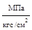 |
|||
|
1 |
2 |
3 |
||
|
1. Изгиб, сжатие и смятие вдоль волокон: |
||||
|
а) элементы прямоугольного сечения (за исключением указанных в подпунктах «б», «в») высотой до 50 см |
Rи, Rс, Rсм |
14 140 |
13 130 |
8,5 85 |
|
б) элементы прямоугольного сечения шириной свыше 11 до 13 см при высоте сечения свыше 11 до 50 см |
Rи, Rс, Rсм |
15 150 |
14 140 |
10 100 |
|
в) элементы прямоугольного сечения шириной свыше 13 см при высоте сечения свыше 13 до 50 см |
Rи, Rс, Rсм |
16 160 |
15 150 |
11 110 |
|
г) элементы из круглых лесоматериалов без врезок в расчетном сечении |
Rи, Rс, Rсм |
_ |
16 160 |
10 100 |
|
2. Растяжение вдоль волокон: |
||||
|
Rр |
10 100 |
7 70 |
_ |
|
|
б) клееные элементы |
Rр |
12 120 |
9 90 |
_ |
|
Rс90, Rсм90 |
1,8 18 |
1,8 18 |
1,8 18 |
|
|
а) в опорных частях конструкций, лобовых врубках и узловых примыканиях элементов |
Rсм90 |
3 30 |
3 30 |
3 30 |
|
б) под шайбами при углах смятия от 90 до 60° |
Rсм90 |
4 40 |
4 40 |
4 40 |
|
а) при изгибе неклееных элементов |
Rск |
1,8 18 |
1,6 16 |
1,6 16 |
|
б) при изгибе клееных элементов |
Rск |
1,6 16 |
1,5 15 |
1,5 15 |
|
в) в лобовых врубках для максимального напряжения |
Rск |
2,4 24 |
2,1 21 |
2,1 21 |
|
г) местное в клеевых соединениях для максимального напряжения |
Rск |
2,1 21 |
2,1 21 |
2,1 21 |
|
6. Скалывание поперек волокон: |
||||
|
а) в соединениях неклееных элементов |
Rск90 |
1 10 |
0,8 8 |
0,6 6 |
|
б) в соединениях клееных элементов |
Rск90 |
0,7 7 |
0,7 7 |
0,6 6 |
|
7. Растяжение поперек волокон элементов из клееной древесины |
Rр90 |
0,35 3,5 |
0,3 3 |
0,25 2,5 |
Примечания: 1. Расчетное сопротивление древесины местному смятию поперек волокон на части длины (при длине незагруженных участков не менее длины площадки смятия и толщины элементов), за исключением случаев, оговоренных в п. 4 данной таблицы, определяется по формуле
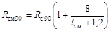
где Rс90 - расчетное сопротивление древесины сжатию и смятию по всей поверхности поперек волокон (п. 3 данной таблицы);
l - длина площадки смятия вдоль волокон древесины, см.
2. Расчетное сопротивление древесины смятию под углом a к направлению волокон определяется по формуле
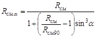
3. Расчетное сопротивление древесины скалыванию под углом к направлению волокон определяется по формуле
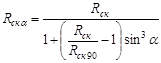
4. В конструкциях построечного изготовления величины расчетных сопротивлений на растяжение, принятые по п. 2а данной таблицы, следует снижать на 30 %.
5. Расчетное сопротивление изгибу для элементов настила и обрешетки под кровлю из древесины 3-го сорта следует принимать равным 13 МПа (130 кгс/см2).
Таблица 4
|
Коэффициент mп для расчетных сопротивлений |
|||
|
растяжению, изгибу, сжатию и смятию вдоль волокон Rр, Rи, Rс, Rсм |
сжатию и смятию поперек волокон Rс90, Rсм90 |
скалыванию Rск |
|
|
Хвойные |
|||
|
1. Лиственница, кроме европейской и японской |
1,2 |
1,2 |
1 |
|
2. Кедр сибирский, кроме Красноярского края |
0,9 |
0,9 |
0,9 |
|
3. Кедр Красноярского края, сосна веймутова |
0,65 |
0,65 |
0,65 |
|
4. Пихта |
0,8 |
0,8 |
0,8 |
|
Твердые лиственные |
|||
|
5. Дуб |
1,3 |
2 |
1,3 |
|
6. Ясень, клен, граб |
1,3 |
2 |
1,6 |
|
7. Акация |
1,5 |
2,2 |
1,8 |
|
8. Береза, бук |
1,1 |
1,6 |
1,3 |
|
9. Вяз, ильм |
1 |
1,6 |
1 |
|
Мягкие лиственные |
|||
|
10. Ольха, липа, осина, тополь |
0,8 |
1 |
0,8 |
Примечание. Коэффициенты mп, указанные в таблице для конструкций опор воздушных линий электропередачи, изготавливаемых из не пропитанной антисептиками лиственницы (при влажности £ 25 %), умножаются на коэффициент 0,85.
3.2. Расчетные сопротивления, приведенные в табл. 3, следует умножать на коэффициенты условий работы:
а) для различных условий эксплуатации конструкций - на значения коэффициент mв, указанные в табл. 5;
Таблица 5
|
Коэффициент mв |
Условия эксплуатации (по табл. 1) |
Коэффициент mв |
|
|
А1, А2, Б1, Б2 |
1 |
В2, В3, Г1 |
0,85 |
|
А3, Б3, В1 |
0,9 |
Г2, Г3 |
0,75 |
б) для конструкций, эксплуатируемых при установившейся температуре воздуха до +35 С, - на коэффициент mт = 1; при температуре +50 С - на коэффициент mт = 0,8. Для промежуточных значений температуры коэффициент принимается по интерполяции;
в) для конструкций, в которых напряжения в элементах, возникающие от постоянных и временных длительных нагрузок, превышают 80 % суммарного напряжения от всех нагрузок, - на коэффициент mд = 0,8;
г) для конструкций, рассчитываемых с учетом воздействия кратковременных (ветровой, монтажной или гололедной) нагрузок, а также нагрузок от тяжения и обрыва проводов воздушных ЛЭП и сейсмической, - на коэффициенты mн, указанные в табл. 6;
Таблица 6
|
Коэффициент mн |
||
|
для всех видов сопротивлений, кроме смятия поперек волокон |
для смятия поперек волокон |
|
|
1. Ветровая, монтажная, кроме указанной в п. 3 |
1,2 |
1,4 |
|
2. Сейсмическая |
1,4 |
1,6 |
|
Для опор воздушных линий электропередачи |
||
|
1,45 |
1,6 |
|
|
4. При обрыве проводов и тросов |
1,9 |
2,2 |
д) для изгибаемых, внецентренно-сжатых, сжато-изгибаемых и сжатых клееных элементов прямоугольного сечения высотой более 50 см значения расчетных сопротивлений изгибу и сжатию вдоль волокон - на коэффициенты mб, указанные в табл. 7;
Таблица 7
|
50 и менее |
60 |
70 |
80 |
100 |
120 и более |
|
|
Коэффициент mб |
1 |
0,96 |
0,93 |
0,90 |
0,85 |
0,8 |
е) для изгибаемых, внецентренно-сжатых, сжато-изгибаемых и сжатых клееных элементов в зависимости от толщины слоев значения расчетных сопротивлений изгибу, скалыванию и сжатию вдоль волокон - на коэффициенты mсл, указанные в табл. 8;
Таблица 8
|
19 и менее |
26 |
33 |
42 |
|
|
Коэффициент mсл |
1,1 |
1,05 |
1 |
0,95 |
ж) для гнутых элементов конструкций значения расчетных сопротивлений растяжению, сжатию и изгибу - на коэффициенты mгн, указанные в табл. 9;
Таблица 9
|
Обозначение расчетных сопротивлений |
Коэффициент mгн при отношении rк /а |
||||
|
150 |
200 |
250 |
500 и более |
||
|
Сжатие и изгиб |
Rс, Rи |
0,8 |
0,9 |
1 |
1 |
|
Растяжение |
Rр |
0,6 |
0,7 |
0,8 |
1 |
Примечание: rк - радиус кривизны гнутой доска или бруска; а - толщина гнутой доски или бруска в радиальном направлении.
и) для растянутых элементов с ослаблением в расчетном сечении и изгибаемых элементов из круглых лесоматериалов с подрезкой в расчетном сечении - на коэффициент mо = 0,8;
к) для элементов, подвергнутых глубокой пропитке антипиренами под давлением, - на коэффициент mа = 0,9.
3.3. Расчетные сопротивления строительной фанеры приведены в табл. 10.
Таблица 10
|
Расчетные сопротивления, 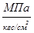 |
|||||
|
Растяжению в плоскости листа Rф.р |
сжатию в плоскости листа Rф.с |
изгибу из плоскости листа Rф.и |
скалыванию в плоскости листа Rф.ск |
срезу перпендикулярно плоскости листа Rф.ср |
|
|
1. Фанера клееная березовая марки ФСФ сортов В/ВВ, В/С, ВВ/С |
|||||
|
а) семислойная толщиной 8 мм и более: |
|||||
|
вдоль волокон |
14 140 |
12 120 |
16 160 |
0,8 8 |
6 60 |
|
поперек волокон наружных слоев |
9 90 |
8,5 85 |
6,5 65 |
0,8 8 |
6 60 |
|
под углом 45° к волокнам |
4,5 45 |
7 70 |
_ |
0,8 8 |
9 90 |
|
б) пятислойная толщиной 5-7 мм: |
|||||
|
вдоль волокон наружных слоев |
14 140 |
13 130 |
18 180 |
0,8 8 |
5 50 |
|
поперек волокон наружных слоев |
6 60 |
7 70 |
3 30 |
0,8 8 |
6 60 |
|
под углом 45° к волокнам |
4 40 |
6 60 |
_ |
0,8 8 |
9 90 |
|
2. Фанера клееная из древесины лиственницы марки ФСФ сортов В/ВВ и ВВ/С семислойная толщиной 8 мм и более: |
|||||
|
вдоль волокон наружных слоев |
9 90 |
17 170 |
18 180 |
0,6 6 |
5 50 |
|
поперек волокон наружных слоев |
7,5 75 |
13 130 |
11 110 |
0,5 5 |
5 50 |
|
под углом 45° к волокнам |
3 30 |
5 50 |
_ |
0,7 7 |
7,5 75 |
|
3. Фанера бакелизированная марки ФСБ толщиной 7 мм и более: |
|||||
|
вдоль волокон наружных слоев |
32 320 |
28 280 |
33 330 |
1,8 18 |
11 110 |
|
поперек волокон наружных слоев |
24 240 |
23 230 |
25 250 |
1,8 18 |
12 120 |
|
под углом 45° к волокнам |
16,5 165 |
21 210 |
_ |
1,8 18 |
16 160 |
Примечание. Расчетные сопротивления смятию и сжатию перпендикулярно плоскости листа для березовой фанеры марки ФСФ Rф.с.90 = Rф.см.90 = 4 МПа (40 кгс/см2) и марки ФБС Rф.с.90 = Rф.см.90 = 8 МПа (80 кгс/см2).
В необходимых случаях значения расчетных сопротивлений строительной фанеры следует умножать на коэффициенты mв, mт, mд, mн и mа, приведенные в пп. 3.2, а; 3.2, б; 3.2, в; 3.2, г; 3.2, к настоящих норм.
3.4. Упругие характеристики и расчетные сопротивления стали и соединений стальных элементов деревянных конструкций следует принимать по главе СНиП по проектированию стальных конструкций, а арматурных сталей - по главе СНиП по проектированию бетонных и железобетонных конструкций.
Расчетные сопротивления ослабленных нарезкой тяжей из арматурных сталей следует умножать на коэффициент mа = 0,8, а из других сталей - принимать по главе СНиП по проектированию стальных конструкций как для болтов нормальной точности. Расчетные сопротивления двойных тяжей следует снижать умножением на коэффициент m = 0,85.
3.5. Модуль упругости древесины при расчете по предельным состояниям второй группы следует принимать равным: вдоль волокон Е = 10 000 МПа (100 000 кгс/см2); поперек волокон Е90 = 400 МПа (4000 кгс/см2). Модуль сдвига древесины относительно осей, направленных вдоль и поперек волокон, следует принимать равным G90 = 500 МПа (5000 кгс/см2). Коэффициент Пуассона древесины поперек волокон при напряжениях, направленных вдоль волокон, следует принимать равным n90.0 = 0,5, а вдоль волокон при напряжениях, направленных поперек волокон, n0.90 = 0,02.
Величины модулей упругости строительной фанеры в плоскости листа Еф и Gф и коэффициенты Пуассона nф при расчете по второй группе предельных состояний следует принимать по табл. 11.
Таблица 11
|
Модуль упругости Еф, |
Модуль сдвига Gф, |
Коэффициент Пуассона nф |
|
|
1. Фанера клееная березовая марки ФСФ сортов В/ВВ, В/С, ВВ/С семислойная и пятислойная: |
|||
|
вдоль волокон наружных слоев |
9000 90000 |
750 7500 |
0,085 |
|
поперек волокон наружных слоев |
6000 60000 |
750 7500 |
0,065 |
|
под углом 45° к волокнам |
2500 25000 |
3000 30000 |
0,6 |
|
2. Фанера клееная из древесины лиственницы марки ФСФ сортов В/ВВ и ВВ/С семислойная: |
|||
|
вдоль волокон наружных слоев |
7000 70000 |
800 8000 |
0,07 |
|
поперек волокон наружных слоев |
5500 55000 |
800 8000 |
0,06 |
|
под углом 45° к волокнам |
2000 20000 |
2200 22000 |
0,6 |
|
3. Фанера бакелизированная марки ФБС: |
|||
|
вдоль волокон наружных слоев |
12000 12000 |
1000 10000 |
0,085 |
|
поперек волокон наружных слоев |
8500 85000 |
1000 10000 |
0,065 |
|
под углом 45° к волокнам |
3500 35000 |
4000 40000 |
0,7 |
Примечание. Коэффициент Пуассона nф указан для направления, перпендикулярно оси, вдоль которой определен модуль упругости Еф.
Модули упругости древесины и фанеры для конструкций, находящихся в различных условиях эксплуатации, подвергающихся воздействию повышенной температуры, совместному воздействию постоянной и временной длительной нагрузок, следует определять умножением указанных выше величин Е и G на коэффициенты mв в табл. 5 и коэффициенты mт и mд, приведенные в пп. 3.2,б и 3.2, в настоящих норм.
Модуль упругости древесины и фанеры в расчетах
конструкций (кроме опор ЛЭП) на устойчивость и по деформированной схеме следует
принимать равным для древесины ЕI = 300Rс (Rс
- расчетное сопротивление сжатию вдоль волокон, принимаемое по табл. 3),
а модуль сдвига относительно осей, направленных вдоль и поперек волокон, - GI0.90
+ 0,05EI; для фанеры - ЕфI = 250Rфс;
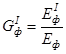
4.1. Расчет центрально-растянутых элементов следует производить по формуле
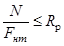
где N - расчетная продольная сила;
Rp - расчетное сопротивление древесины растяжению вдоль волокон;
Fнт - площадь поперечного сечения элемента нетто.
При определении Fнт ослабления, расположенные на участке длиной до 200 мм, следует принимать совмещенными в одном сечении.
4.2. Расчет центрально-сжатых элементов постоянного цельного сечения следует производить по формулам:
а) на прочность
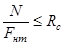
б) на устойчивость
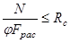
где Rс - расчетное сопротивление древесины сжатию вдоль волокон;
j - коэффициент продольного изгиба, определяемый согласно п. 4.3;
Fнт - площадь нетто поперечного сечения элемента;
Fрас - расчетная площадь поперечного сечения элемента, принимаемая равной:
при отсутствии ослаблений или ослаблениях в опасных сечениях, не выходящих на кромки (рис. 1, а), если площадь ослаблений не превышает 25 % Ебр, Ерасч = Fбр, где Fбр - площадь сечения брутто; при ослаблениях, не выходящих на кромки, если площадь ослабления превышает 25 % Fбр, Fрас = 4/3 Fнт; при симметричных ослаблениях, выходящих на кромки (рис. 1, б), Fрас = Fнт.
Рис. 1. Ослабление сжатых элементов
а -не выходящие на кромку; б - выходящие на кромку
4.3. Коэффициент продольного изгиба j следует определять по формулам (7) и (8);
при гибкости элемента l £ 70
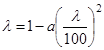
при гибкости элемента l > 70
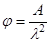
где коэффициент а = 0,8 для древесины и а = 1 для фанеры;
коэффициент А = 3000 для древесины и А = 2500 для фанеры.
4.4. Гибкость элементов цельного сечения определяют по формуле
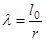
где lо - расчетная длина элемента;
r - радиус инерции сечения элемента с максимальными размерами брутто соответственно относительно осей Х и У.
4.5. Расчетную длину элемента lо следует определять умножением его свободной длины l на коэффициент m0
lо = lm0 (10)
4.6. Составные элементы на податливых соединениях, опертые всем сечением, следует рассчитывать на прочность и устойчивость по формулам (5) и (6), при этом Fнт и Fрас определять как суммарные площади всех ветвей. Гибкость составных элементов l следует определять с учетом податливости соединений по формуле
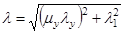
где lу - гибкость всего элемента относительно оси У (рис. 2), вычисленная по расчетной длине элемента lо без учета податливости;
l1 - гибкость отдельной ветви относительно оси I-I (см. рис. 2), вычисленная по расчетной длине ветви l1; при l1 меньше семи толщин (h1) ветви принимаются l1 = 0;
mу - коэффициент приведения гибкости, определяемый по формуле
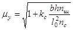
где b и h - ширина и высота поперечного сечения элемента, см:
nш - расчетное количество швов в элементе, определяемое числом швов, по которым суммируется взаимный сдвиг элементов (на рис. 2, а - 4 шва, на рис. 2, б - 5 швов);
lо - расчетная длина элемента, м;
nс - расчетное количество срезов связей в одном шве на 1 м элемента (при нескольких швах с различным количеством срезов следует принимать среднее для всех швов количество срезов);
kс - коэффициент податливости соединений, который следует определять по формулам табл. 12.
Таблица 12
|
Коэффициент kc при |
||
|
центральном сжатии |
сжатии с изгибом |
|
|
1. Гвозди |
1 10d2 |
1 5d2 |
|
2. Стальные цилиндрические нагели |
||
|
а) диаметром £ 1/7 толщины соединяемых элементов |
1 5d2 |
1 2,5d2 |
|
б) диаметром > 1/7 толщины соединяемых элементов |
1,5 ad |
3 ad |
|
3. Дубовые цилиндрические нагели |
1 d2 |
1,5 d2 |
|
4. Дубовые пластинчатые нагели |
- |
1,4 dbпл |
|
5. Клей |
0 |
0 |
Примечание. Диаметры гвоздей и нагелей d, толщину элементов а, ширину bпл и толщину d пластинчатых нагелей следует принимать в см.
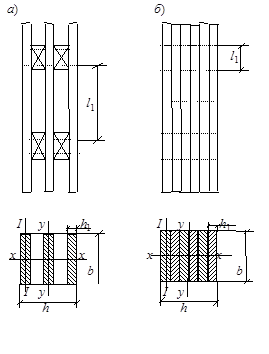
Рис. 2. Составные элементы
а - с прокладками; б - без прокладок
При определении kс диаметр гвоздей следует принимать не более 0,1 толщины соединяемых элементов. Если размер защемленных концов гвоздей менее 4d, то срезы в примыкающих к ним швах в расчете не учитывают. Значение kс соединений на стальных цилиндрических нагелях следует определять по толщине а более тонкого из соединяемых элементов.
При определении kс диаметр дубовых цилиндрических нагелей следует принимать не более 0,25 толщины более тонкого из соединяемых элементов.
Связи в швах следует расставлять равномерно по длине элемента. В шарнирно-опертых прямолинейных элементах допускается в средних четвертях длины ставить связи в половинном количестве, вводя в расчет по формуле (12) величину nс, принятую для крайних четвертей длины элемента.
Гибкость составного элемента, вычисленную по формуле (11), следует принимать не более гибкости l отдельных ветвей, определяемой по формуле
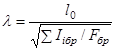
где åIiбр - сумма моментов инерции брутто поперечных сечений отдельных ветвей относительно собственных осей, параллельных оси У (см. рис. 2);
Fбр - площадь сечения брутто элемента;
lо - расчетная длина элемента.
Гибкость составного элемента относительно оси, проходящей через центры тяжести сечений всех ветвей (ось Х на рис. 2), следует определять как для цельного элемента, т. е. без учета податливости связей, если ветви нагружены равномерно. В случае неравномерно нагруженных ветвей следует руководствоваться п. 4.7.
Если ветви составного элемента имеют различное сечение, то расчетную гибкость l1 ветви в формуле (11) следует принимать равной:
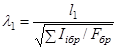
определение l1 приведено на рис. 2.
4.7. Составные элементы на податливых соединениях, часть ветвей которых не оперта по концам, допускается рассчитывать на прочность и устойчивость по формулам (5), (6) при соблюдении следующих условий:
а) площади поперечного сечения элемента Fнт и Fрас следует определять по сечению опертых ветвей;
б) гибкость элемента относительно оси У (см. рис. 2) определяется по формуле (11); при этом момент инерции принимается с учетом всех ветвей, а площадь - только опертых;
в) при определении гибкости относительно оси Х (см. рис. 2) момент инерции следует определять по формуле
I = Iо + 0,5Iно, (15)
где Iо и Iно - моменты инерции поперечных сечений соответственно опертых и неопертых ветвей.
4.8. Расчет на устойчивость центрально-сжатых элементов переменного по высоте сечения следует выполнять по формуле
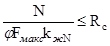
где Fмакс - площадь поперечного сечения брутто с максимальными размерами;
kжN - коэффициент, учитывающий переменность высоты сечения, определяемый по табл. 1 прил. 4 (для элементов постоянного сечения kжN = 1);
j - коэффициент продольного изгиба, определяемый по п. 4.3 для гибкости, соответствующей сечению с максимальными размерами.
4.9. Расчет изгибаемых элементов, обеспеченных от потери устойчивости плоской формы деформирования (см. пп. 4.14 и 4.15), на прочность по нормальным напряжениям следует производить по формуле
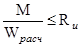
где М - расчетный изгибающий момент;
Rи - расчетное сопротивление изгибу;
Wрасч - расчетный момент сопротивления поперечного сечения элемента. Для цельных элементов Wрасч = Wнт; для изгибаемых составных элементов на податливых соединениях расчетный момент сопротивления следует принимать равным моменту сопротивления нетто Wнт, умноженному на коэффициент kw; значения kw для элементов, составленных из одинаковых слоев, приведены в табл. 13. При определении Wнт ослабления сечений, расположенные на участке элемента длиной до 200 мм, принимают совмещенными в одном сечении.
Таблица 13
|
Число слоев в элементе |
Значение коэффициентов для расчета изгибаемых составных элементов при пролетах, м |
||||
|
2 |
4 |
6 |
9 и более |
||
|
kw |
2 |
0,7 |
0,85 |
0,9 |
0,9 |
|
3 |
0,6 |
0,8 |
0,85 |
0,9 |
|
|
10 |
0,4 |
0,7 |
0,8 |
0,85 |
|
|
kж |
2 |
0,45 |
0,65 |
0,75 |
0,8 |
|
3 |
0,25 |
0,5 |
0,6 |
0,7 |
|
|
10 |
0,07 |
0,2 |
0,3 |
0,4 |
|
Примечание. Для промежуточных значений величины пролета и числа слоев коэффициенты определяются интерполяцией.
4.10. Расчет изгибаемых элементов на прочность по скалыванию следует выполнять по формуле
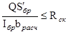
где Q - расчетная поперечная сила;
S¢бр - статический момент брутто сдвигаемой части поперечного сечения элемента относительно нейтральной оси;
Iбр - момент инерции брутто поперечного сечения элемента относительно нейтральной оси;
bрас - расчетная ширина сечения элемента;
Rск - расчетное сопротивление скалыванию при изгибе.
4.11. Количество срезов связей nс, равномерно расставленных в каждом шве составного элемента на участке с однозначной эпюрой поперечных сил, должно удовлетворять условию
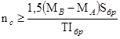
где Т - расчетная несущая способность связи в данном шве;
МА, МВ - изгибающие моменты в начальном А и конечном В сечениях рассматриваемого участка.
Примечание. При наличии в шве связей разной несущей способности, но одинаковых по характеру работы (например, нагелей и гвоздей), несущие способности их следует суммировать.
4.12. Расчет элементов цельного сечения на прочность при косом изгибе следует производить по формуле
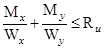
где Мх и Му - составляющие расчетного изгибающего момента для главных осей сечения Х и У;
Wx и Wу - моменты сопротивлений поперечного сечения нетто относительно главных осей сечения Х и У.
4.13. Клееные криволинейные элементы, изгибаемые моментом М, уменьшающим их кривизну, следует проверять на радиальные растягивающие напряжения по формуле
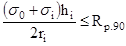
где s0 - нормальное напряжение в крайнем волокне растянутой зоны;
si - нормальное напряжение в промежуточном волокне сечения, для которого определяются радиальные растягивающие напряжения;
hi - расстояние между крайним и рассматриваемым волокнами;
ri - радиус кривизны линии, проходящей через центр тяжести части эпюры нормальных растягивающих напряжений, заключенной между крайним и рассматриваемым волокнами;
Rр.90 - расчетное сопротивление древесины растяжению поперек волокон, принимаемое по п. 7 табл. 3.
4.14. Расчет на устойчивость плоской формы деформирования изгибаемых элементов прямоугольного постоянного сечения следует производить по формуле
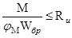
где М - максимальный изгибающий момент на рассматриваемом участке lр;
Wбр - максимальный момент сопротивления брутто на рассматриваемом участке lp.
Коэффициент jМ для изгибаемых элементов прямоугольного постоянного поперечного сечения, шарнирно-закрепленных от смещения из плоскости изгиба и закрепленных от поворота вокруг продольной оси в опорных сечениях, следует определять по формуле
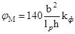
где lp - расстояние между опорными сечениями элемента, а при закреплении сжатой кромки элемента в промежуточных точках от смещения из плоскости изгиба - расстояние между этими точками;
b - ширина поперечного сечения;
h - максимальная высота поперечного сечения на участке lp;
kф - коэффициент, зависящий от формы эпюры изгибающих моментов на участке lp, определяемый по табл. 2 прил. 4 настоящих норм.
При расчете изгибаемых элементов с линейно меняющейся по длине высотой и постоянной шириной поперечного сечения, не имеющих закреплений из плоскости по растянутой от момента М кромке, или при m < 4 коэффициент jМ по формуле (23) следует умножать на дополнительный коэффициент kжМ. Значения kжМ приведены в табл. 2 прил. 4. При m ³ 4 kжМ = 1.
При подкреплении из плоскости изгиба в промежуточных точках растянутой кромки элемента на участке lp коэффициент jМ определенный по формуле (23), следует умножать на коэффициент kпМ:
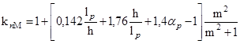
где ap - центральный угол в радианах, определяющий участок lp элемента кругового очертания (для прямолинейных элементов ap = 0);
m - число подкрепленных (с одинаковым шагом) точек растянутой
кромки на участке lp (при m ³ 4 величину 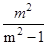
4.15. Проверку устойчивости плоской формы деформирования изгибаемых элементов постоянного двутаврового или коробчатого поперечного сечений следует производить в тех случаях, когда
lp ³ 7b, (25)
где b - ширина сжатого пояса поперечного сечения.
Расчет следует производить по формуле
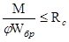
где j - коэффициент продольного изгиба из плоскости изгиба сжатого пояса элемента, определяемый по п. 4.3;
Rс - расчетное сопротивление сжатию;
Wбр - момент сопротивления брутто поперечного сечения; в случае фанерных стенок - приведенный момент сопротивления в плоскости изгиба элемента.
4.16. Расчет внецентренно-растянутых и растянуто-изгибаемых элементов следует производить по формуле
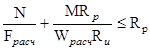
где Wрасч - расчетный момент сопротивления поперечного сечения (см. п. 4.9);
Fрасч - площадь расчетного сечения нетто.
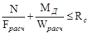
где Мд - изгибающий момент от действия поперечных и продольных нагрузок, определяемый из расчета по деформированной схеме.
Примечания: 1. Для шарнирно-опертых элементов при симметричных эпюрах изгибающих моментов синусоидального, параболического, полигонального и близких к ним очертаний, а также для консольных элементов Мд следует определять по формуле
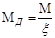
где x - коэффициент, изменяющийся от 1 до 0, учитывающий дополнительный момент от продольной силы вследствие прогиба элемента, определяемый по формуле
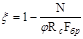
М - изгибающий момент в расчетном сечении без учета дополнительного момента от продольной силы;
j - коэффициент, определяемый по формуле (8) п. 4.3.
2. В случаях когда в шарнирно-опертых элементах эпюры изгибающих моментов имеют треугольное или прямоугольное очертание, коэффициент - по формуле (30) следует умножать на поправочный коэффициент kн:
kн = aн + x(1 - aн), (31)
где aн - коэффициент, который следует принимать равным 1,22 при эпюрах изгибающих моментов треугольного очертания (от сосредоточенной силы) и 0,81 при эпюрах прямоугольного очертания (от постоянного изгибающего момента).
3. При несимметричном загружении шарнирно-опертых элементов величину изгибающего момента Мм следует определять по формуле
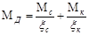
где Мс и Мк - изгибающие моменты в расчетном сечении элемента от симметричной и кососимметричной составляющих нагрузки;
xс и xк - коэффициенты, определяемые по формуле (30) при величинах гибкостей, соответствующих симметричной и кососимметричной формам продольного изгиба.
4. Для элементов переменного по высоте сечения площадь Fбр в формуле (30) следует принимать для максимального по высоте сечения, а коэффициент j следует умножать на коэффициент kжN, принимаемый по табл. 1 прил. 4.
5. При отношении напряжений от изгиба к напряжениям от сжатия менее 0,1 сжато-изгибаемые элементы следует проверять также на устойчивость по формуле (6) без учета изгибающего момента.
4.18. Расчет на устойчивость плоской формы деформирования сжато-изгибаемых элементов следует производить по формуле
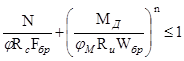
где Fбр - площадь брутто с максимальными размерами сечения элемента на участке lp;
Wбр - см. п. 4.14;
n = 2 - для элементов без закрепления растянутой зоны из плоскости деформирования и n = 1 для элементов, имеющих такие закрепления;
j - коэффициент продольного изгиба, определяемый по формуле (8) для гибкости участка элемента расчетной длиной lp из плоскости деформирования;
jм - коэффициент, определяемый по формуле (23).
При наличии в элементе на участке lp закреплений из плоскости деформирования со стороны растянутой от момента М кромки коэффициент jм следует умножать на коэффициент kпМ, определяемый по формуле (24), а коэффициент j - на коэффициент kпN по формуле
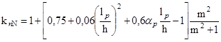
где ap, lp, h и m - см. п. 4.14.
При расчете элементов переменного по высоте сечения, не имеющих закреплений из плоскости по растянутой от момента М кромке, или при m < 4 коэффициенты j и jМ, определяемые по формулам (8) и (23), следует дополнительно умножать соответственно на коэффициенты kжN и kжМ, приведенные в табл. 1 и 2 прил. 4.
При m ³ 4 kжN = kжМ = 1.
4.19. В составных сжато-изгибаемых элементах следует проверять устойчивость наиболее напряженной ветви, если расчетная длина ее превышает семь толщин ветви, по формуле
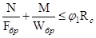
где j1 - коэффициент продольного изгиба для отдельной ветви, вычисленный по ее расчетной длине l1 (см. п. 4.6);
Fбр, Wбр - площадь и момент сопротивления брутто поперечного сечения элемента.
Устойчивость сжато-изгибаемого составного элемента из плоскости изгиба следует проверять по формуле (6) без учета изгибающего момента.
4.20. Количество срезов связей nс, равномерно расставленных в каждом шве сжато-изгибаемого составного элемента на участке с однозначной эпюрой поперечных сил при приложении сжимающей силы по всему сечению, должно удовлетворять условию
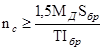
где Sбр - статический момент брутто сдвигаемой части поперечного сечения относительно нейтральной оси;
Iбр - момент инерции брутто поперечного сечения элемента;
Т - расчетная несущая способность одной связи в данном шве;
Мд - изгибающий момент, определяемый по п. 4.17.
4.21. Для определения расчетной длины прямолинейных элементов, загруженных продольными силами по концам, коэффициент m0 следует принимать равным:
при шарнирно-закрепленных концах, а также при шарнирном закреплении в промежуточных точках элемента - 1;
при одном шарнирно-закрепленном и другом защемленном конце - 0,8;
при одном защемленном и другом свободном нагруженном конце - 2,2;
при обоих защемленных концах - 0,65.
В случае распределенной равномерно по длине элемента продольной нагрузки коэффициент m0 следует принимать равным:
при обоих шарнирно-закрепленных концах - 0,73;
при одном защемленном и другом свободном конце - 1,2.
Расчетную длину пересекающихся элементов, соединенных между собой в месте пересечения, следует принимать равной:
при проверке устойчивости в плоскости конструкций - расстоянию от центра узла до точки пересечения элементов;
при проверке устойчивости из плоскости конструкции:
а) в случае пересечения двух сжатых элементов - полной длине элемента;
б) в случае пересечения сжатого элемента с неработающим - величине l1, умноженной на коэффициент m0:
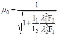
где l1, l1, F1 - полная длина, гибкость и площадь поперечного сечения сжатого элемента;
l2, l2, F2 - длина, гибкость и площадь поперечного сечения неработающего элемента.
Величину m0 следует принимать не менее 0,5;
в) в случае пересечения сжатого элемента с растянутым равной по величине силой - наибольшей длине сжатого элемента, измеряемой от центра узла до точки пересечения элементов.
Если пересекающиеся элементы имеют составное сечение, то в формулу (37) следует подставлять соответствующие значения гибкости, определяемые по формуле (11).
4.22. Гибкость элементов и их отдельных ветвей в деревянных конструкциях не должна превышать значений, указанных в табл. 14.
Таблица 14
|
Предельная гибкость lмакс |
|
|
1. Сжатые пояса, опорные раскосы и опорные стойки ферм, колонны |
120 |
|
2. Прочие сжатые элементы ферм и других сквозных конструкций |
150 |
|
3. Сжатые элементы связей |
200 |
|
4. Растянутые пояса ферм в вертикальной плоскости |
150 |
|
5. Прочие растянутые элементы ферм и других сквозных конструкций |
200 |
|
Для опор воздушных линий электропередачи |
|
|
6. Основные элементы (стойки, приставки, опорные раскосы) |
150 |
|
7. Прочие элементы |
175 |
|
8. Связи |
200 |
Примечание. Для сжатых элементов переменного сечения величины предельной гибкости lмакс
умножаются на 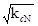
4.23. Расчет клееных элементов из фанеры с древесиной следует выполнять по методу приведенного поперечного сечения.
4.24. Прочность растянутой фанерной обшивки плит (рис. 3) и панелей следует проверять по формуле
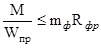
где М - расчетный изгибающий момент;
Rф.р - расчетное сопротивление фанеры растяжению;
mф - коэффициент, учитывающий снижение расчетного сопротивления в стыках фанерной обшивки, принимаемый равным при усовом соединении или с двусторонними накладками: mф = 0,6 для фанеры обычной и mф = 0,8 для фанеры бакелизированной. При отсутствии стыков mф = 1;
Wпр - момент сопротивления поперечного сечения, приведенного к фанере, который следует определять в соответствии с указаниями п. 4.25.
4.25. Приведенный момент сопротивления поперечного сечения клееных элементов из фанеры с древесиной следует определять по формуле
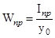
где yо - расстояние от центра тяжести приведенного сечения до нижней грани обшивки;
Iпр - момент инерции сечения, приведенного к фанере:
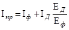
где Iф - момент инерции поперечного сечения фанерных обшивок;
Iд - момент инерции поперечного сечения деревянных ребер каркаса;
Ед /Еф - отношение модулей упругости древесины и фанеры.
При определении приведенных моментов инерции и приведенных моментов сопротивления расчетную ширину фанерных обшивок следует принимать равной bрас = 0,9b при l ³ 6a и bрас = 0,15b, при l < 6а (b - полная ширина сечения плиты, l - пролет плиты, а - расстояние между продольными ребрами по осям).
4.26. Устойчивость сжатой обшивки плит и панелей следует проверять по формуле
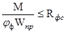
где 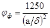 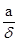
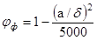
(а - расстояние между ребрами в свету; d - толщина фанеры).
Верхнюю обшивку плит дополнительно следует проверять на местный изгиб от сосредоточенного груза Р = 1 кН (100 кгс) (с коэффициентом перегрузки n = 1,2) как заделанную в местах приклеивания к ребрам пластинку.
4.27. Проверку на скалывание ребер каркаса плит и панелей или обшивки по шву в месте примыкания ее к ребрам следует производить по формуле
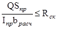
где Q - расчетная поперечная сила;
Sпр - статический момент сдвигаемой части приведенного сечения относительно нейтральной оси;
Rсп - расчетное сопротивление скалыванию древесины вдоль волокон или фанеры вдоль волокон наружных слоев;
bрас - расчетная ширина сечения, которую следует принимать равной суммарной ширине ребер каркаса.
4.28. Расчет на прочность поясов изгибаемых элементов двутаврового и коробчатого сечений с фанерными стенками (рис. 4) следует производить по формуле (17), принимая Wрас = Wпр, при этом напряжения в растянутом поясе не должны превышать Rр, а в сжатом - jRс (j - коэффициент продольного изгиба из плоскости изгиба).
4.29. При проверке стенки на срез по нейтральной оси в формуле (42) значение Rск принимается равным Rф.ср, а расчетная ширина bрас
bрас = ådст, (43)
где ådст - суммарная толщина стенок.
При проверке скалывания по швам между поясами и стенкой в формуле (42) Rск = Rф.ск, а расчетную ширину сечения следует принимать равной
bрас = nhп, (44)
где hп - высота поясов;
n - число вертикальных швов.
4.30. Прочность стенки в опасном сечении на действие главных растягивающих напряжений в изгибаемых элементах двутаврового и коробчатого сечений следует проверять по формуле
, (45)
где Rф.р.a - расчетное сопротивление фанеры растяжению под углом a определяемое по графику рис. 17 прил. 5;
sст - нормальное напряжение в стенке от изгиба на уровне внутренней кромки поясов;
tст - касательные напряжения в стенке на уровне внутренней кромки поясов;
a - угол, определяемый из зависимости
. (46)
Устойчивость стенки с продольным по отношению к оси элемента расположением волокон наружных слоев следует проверять на действие касательных и нормальных напряжений при условии
, (47)
где hст - высота стенки между внутренними гранями полок;
d - толщина стенки.
Расчет следует производить по формуле
где kи и kt - коэффициенты, определяемые по графикам рис. 18, 19 прил. 5;
hрас - расчетная высота стенки, которую следует принимать равной hст при расстоянии между ребрами а ³ hст и равной а при a < hст.
При поперечном по отношению к оси элемента расположении наружных волокон фанерной стенки проверку устойчивости следует производить по формуле (48) на действие только касательных напряжений в тех случаях, когда
. (49)
4.31. Деформации деревянных конструкций или их отдельных элементов следует определять с учетом сдвига и податливости соединений. Величину деформаций податливого соединения при полном использовании его несущей способности следует принимать по табл. 15, а при неполном - пропорциональной действующему на соединение усилию.
Таблица 15
|
Деформация соединения, мм |
|
|
На лобовых врубках и торец в торец |
1,5 |
|
На нагелях всех видов |
2 |
|
В примыканиях поперек волокон |
3 |
|
В клеевых соединениях |
0 |
Таблица 16
|
Элементы конструкций |
Предельные прогибы в долях пролета, не более |
|
1. Балки междуэтажных перекрытий |
1/250 |
|
2. Балки чердачных перекрытий |
1/200 |
|
3. Покрытия (кроме ендов): |
|
|
а) прогоны, стропильные ноги |
1/200 |
|
б) балки консольные |
1/150 |
|
в) фермы, клееные балки (кроме консольных) |
1/300 |
|
г) плиты |
1/250 |
|
д) обрешетки, настилы |
1/150 |
|
4. Несущие элементы ендов |
1/400 |
|
5. Панели и элементы фахверха |
1/250 |
Примечания: 1. При наличии штукатурки прогиб элементов перекрытий только от длительной временной нагрузки не должен превышать 1/350 пролета.
2. При наличии строительного подъема предельный прогиб клееных балок допускается увеличивать до 1/200 пролета.
4.32.* Прогибы и перемещения элементов конструкций не должны превышать предельных, установленных СНиП 2.01.07-85.
(Измененная редакция. Изм. № 1).
4.33. Прогиб изгибаемых элементов следует определять по моменту инерции поперечного сечения брутто. Для составных сечений момент инерции умножается на коэффициент kж учитывающий сдвиг податливых соединений, приведенный в табл. 13.
Наибольший прогиб шарнирно-опертых и консольных изгибаемых элементов постоянного и переменного сечений f следует определять по формуле
где fо - прогиб балки постоянного сечения высотой h без учета деформаций сдвига;
h - наибольшая высота сечения;
l - пролет балки;
k - коэффициент, учитывающий влияние переменности высоты сечения, принимаемый равным 1 для балок постоянного сечения;
с - коэффициент, учитывающий влияние деформаций сдвига от поперечной силы.
Значения коэффициентов k и с для основных расчетных схем балок приведены в табл. 3 прил. 4.
4.34. Прогиб клееных элементов из фанеры с древесиной следует определять, принимая жесткость сечения равной 0,7 ЕIпр. Расчетная ширина обшивок плит и панелей при определении прогиба принимается в соответствии с указаниями п. 4.25.
4.35. Прогиб сжато-изгибаемых шарнирно-опертых симметрично нагруженных элементов и консольных элементов следует определять по формуле
, (51)
где f - прогиб, определяемый по формуле (50);
x - коэффициент, определяемый по формуле (30).
5.1. Действующее на соединение (связь) усилие не должно превышать расчетной несущей способности соединения (связи) Т.
5.2. Расчетную несущую способность соединений, работающих на смятие и скалывание, следует определять по формулам:
а) из условия смятия древесины
Т = RсмaFсм; (52)
б) из условия скалывания древесины
, (53)
где Fсм - расчетная площадь смятия;
Fсм - расчетная площадь скалывания;
Rсмa - расчетное сопротивление древесины смятию под углом к направлению волокон;
- расчетное среднее по площадке скалывания сопротивление древесины скалыванию вдоль волокон, определяемое п. 5.3.
5.3. Среднее по площадке скалывания расчетное сопротивление древесины скалыванию следует определять по формуле
, (54)
где Rск - расчетное сопротивление древесины скалыванию вдоль волокон (при расчете по максимальному напряжению);
lск - расчетная длина плоскости скалывания, принимаемая не более 10 глубин врезки в элемент;
е - плечо сил скалывания, принимаемое равным 0,5h при расчете элементов с несимметричной врезкой в соединениях без зазора между элементами (рис. 5, а) и 0,25h при расчете симметрично загруженных элементов с симметричной врезкой (рис. 5, б); h - полная высота поперечного сечения элемента);
b - коэффициент, принимаемый равным 0,25 при расчете соединений, работающих по схеме, показанной на рис. 5, г и b = 0,125 при расчете соединений, работающих по схеме согласно рис. 5, в; если обеспечено обжатие по плоскостям скалывания.
Отношение lск /е должно быть не менее 3.
Рис. 5. Врезки в элементах соединений
а - несимметричная; б - симметричная; в, г - схемы скалывания в соединениях
5.4. При расчете конструкций клеевые соединения следует рассматривать как неподатливые соединения.
5.5. Клеевые соединения следует использовать:
а) для стыкования отдельных слоев на зубчатом соединении (рис. 6, а);
б) для образования сплошного сечения (пакетов) путем сплачивания слоев по высоте и ширине сечения. При этом по ширине пакета швы склеиваемых кромок в соседних слоях следует сдвигать не менее чем на толщину слоя d по отношению друг к другу (рис. 6, б);
в) для стыкования клееных пакетов, сопрягаемых под углом на зубчатый шип по всей высоте сечения (рис. 6, в).
Рис. 6. Клеевые соединения
а - при стыковании отдельных слоев по длине зубчатым шипом, выходящим на пласть; б - при образовании пакетов и сплачивании по пласти и кромке; в - при стыковании клееных элементов под углом зубчатым шипом
Величина внутреннего угла между осями сопрягаемых под углом элементов должна быть не менее 104°.
5.6. Применение усового соединения допускается для фанеры вдоль волокон наружных слоев. Длину усового соединения следует принимать не менее 10 толщин стыкуемых элементов.
5.7. Толщину склеиваемых слоев в элементах, как правило, не следует принимать более 33 мм. В прямолинейных элементах допускается толщина слоев до 42 мм при условии устройства в них продольных прорезей.
5.8. В клееных элементах из фанеры с древесиной не следует применять доски шириной более 100 мм при склеивании их с фанерой и более 150 мм в примыканиях элементов под углом от 30 до 45°.
5.9. Узловые соединения элементов из брусьев и круглого леса на лобовых врубках следует выполнять с одним зубом (рис. 7).
Рис. 7. Лобовая врубка с одним зубом
Рабочая плоскость смятия во врубках при соединении элементов, не испытывающих поперечного изгиба, должна располагаться перпендикулярно оси примыкающего сжатого элемента. Если примыкающий элемент помимо сжатия испытывает поперечный изгиб, рабочую плоскость смятия во врубках следует располагать перпендикулярно равнодействующей осевой и поперечной сил.
Элементы, соединяемые на лобовых врубках, должны быть стянуты болтами.
5.10. Лобовые врубки следует рассчитывать на скалывание согласно указаниям пп. 5.2 и 5.3, принимая расчетное сопротивление скалыванию по п. 5 табл. 3.
5.11. Длину плоскости скалывания лобовых врубок следует принимать не менее 1,5h, где h - полная высота сечения скалываемого элемента.
Глубину врубки следует принимать не более 1/4 h в промежуточных узлах сквозных конструкций и не более 1/3 h в остальных случаях, при этом глубина врубок h1 в брусьях должна быть не менее 2 см, а в круглых лесоматериалах - не менее 3 см.
5.12. Расчет на смятие лобовых врубок с одним зубом следует производить по плоскости смятия (см. рис. 7). Угол смятия древесины a следует принимать равным углу между направлениями сминающего усилия и волокон сминаемого элемента.
Расчетное сопротивление древесины смятию под углом к волокнам для лобовых врубок следует определять по формуле (2) примеч. 2 к табл. 3 независимо от размеров площади смятия.
5.13. Расчетную несущую способность цилиндрического нагеля на один шов сплачивания в соединениях элементов из сосны и ели (рис. 8) при направлении усилий, передаваемых нагелями вдоль волокон и гвоздями под любым углом, следует определять по табл. 17. В необходимых случаях расчетную несущую способность цилиндрического нагеля, определенную по табл. 17, следует устанавливать с учетом указаний п. 5.15.
Таблица 17
|
Напряженное состояние соединения |
Расчетная несущая способность Т на один шов сплачивания (условный срез), кН (кгс) |
||
|
гвоздя, стального, алюминиевого, стеклопластикового нагеля |
дубового нагеля |
||
|
1. Симметричные соединения (рис. 8, а) |
а) смятие в средних элементах |
0,5cd (50cd) |
0,3cd (30cd) |
|
б) смятие в крайних элементах |
0,8cd (80cd) |
0,5cd (50cd) |
|
|
а) смятие во всех элементах равной толщины, а также в более толстых элементах односрезных соединений |
0,35cd (35cd) |
0,2cd (20cd) |
|
|
б) смятие в более толстых средних элементах двухсрезных соединений при а £ 0,5с |
0,25cd (25cd) |
0,14cd (14cd) |
|
|
в) смятие в более тонких крайних элементах при а £ 0,35с |
0,8ad (80ad) |
0,5ad (50ad) |
|
|
г) смятие в более тонких элементах односрезных соединений и в крайних элементах при c > a > 0,35c |
kнad |
kнad |
|
|
а) изгиб гвоздя |
2,5d2 + 0,01a2 (250d2 + a2), но не более 4d2 (400d2) |
- |
|
|
б) изгиб нагеля из стали С38/23 |
1,8d2 + 0,02a2 (180d2 + 2a2), но не более 2,5d2 (250d2) |
- |
|
|
в) изгиб нагеля из алюминиевого сплава Д16-Т |
1,6d2 + 0,02a2 (160d2 + 2a2), но не более 2,2d2 (220d2) |
- |
|
|
г) изгиб нагеля из стеклопластика АГ-4С |
1,45d2 + 0,02a2 (145d2 + 2a2), но не более 1,8d2 (180d2) |
- |
|
|
д) изгиб нагеля из древеснослоистого пластика ДСПБ |
0,8d2 + 0,02a2 (80d2 + 2a2), но не более d2 (100d2) |
- |
|
|
е) изгиб дубового нагеля |
- |
0,45d2 + 0,02a2 (45d2 + 2a2), но не более 0,65d2 (65d2) |
|
Примечания: 1. В таблице: с - толщина средних элементов, а также равных по толщине или более толстых элементов односрезных соединений, а - толщина крайних элементов, а также более тонких элементов односрезных соединений; d - диаметр нагеля; все размеры в см.
2. Расчетную несущую способность нагеля в двухсрезных несимметричных соединениях при неодинаковой толщине элементов следует определять с учетом следующего:
а) расчетную несущую способность нагеля из условия смятия в среднем элементе толщиной с при промежуточных значениях а между с и 0,5с следует определять интерполяцией между значениями по пп. 2а и 2б таблицы;
б) при толщине крайних элементов а > с расчетную несущую способность нагеля следует определять из условия смятия в крайних элементах по п. 2а таблицы с заменой с на а;
в) при определении расчетной несущей способности из условий изгиба нагеля толщину крайнего элемента а в п. 3 таблицы следует принимать не более 0,6с.
3. Значения коэффициентов kн для определения расчетной несущей способности при смятии в более тонких элементах односрезных соединений при с ³ а ³ 0,35с приведены в табл. 18.
4. Расчетную несущую способность нагеля в рассматриваемом шве следует принимать равной меньшему из всех значений, полученных по формулам табл. 17.
5. Расчет нагельных соединений на скалывание производить не следует, если выполняются условия расстановки нагелей в соответствии с пп. 5.18 и 5.22.
6. Диаметр нагеля d следует назначать из условия наиболее полного использования его несущей способности по изгибу.
7. Число нагелей nн в симметричном соединении, кроме гвоздевого, следует определять по формуле
, (55)
где N - расчетное усилие;
Т - наименьшая расчетная несущая способность, найденная по формулам табл. 17;
nш - число расчетных швов одного нагеля.
Рис. 8. Нагельные соединения
а - симметричные; б - несимметричные
Таблица 18
|
Значения коэффициента kн для односрезных соединений при а/с |
|||||||
|
0,35 |
0,5 |
0,6 |
0,7 |
0,8 |
0,9 |
1 |
|
|
Гвоздь, стальной, алюминиевый и стеклопластиковый нагель |
0,8 80 |
0,58 58 |
0,48 48 |
0,43 43 |
0,39 39 |
0,37 37 |
0,35 35 |
|
Дубовый нагель |
0,5 50 |
0,5 50 |
0,44 44 |
0,38 38 |
0,32 32 |
0,26 26 |
0,2 20 |
Примечание. В знаменателе указаны значения kн для Т в кгс.
5.14. Расчетную несущую способность цилиндрических нагелей при направлении передаваемого нагелем усилия под углом к волокнам следует определять согласно п. 5.13 с умножением:
а) на коэффициент ka (табл. 19) при расчете на смятие древесины в нагельном гнезде;
Таблица 19
|
Коэффициент ka |
|||||
|
для стальных, алюминиевых и стеклопластиковых нагелей диаметром, мм |
для дубовых нагелей |
||||
|
12 |
16 |
20 |
24 |
||
|
30 |
0,95 |
0,9 |
0,9 |
0,9 |
1 |
|
60 |
0,75 |
0,7 |
0,65 |
0,6 |
0,8 |
|
90 |
0,7 |
0,65 |
0,55 |
0,5 |
0,7 |
Примечания: 1. Значение ka для промежуточных углов определяется интерполяцией.
2. При расчете односрезных соединений для более толстых элементов, работающих на смятие под углом, значение ka следует умножать на дополнительный коэффициент 0,9 при с/а < 1,5 и на 0,75 при с/а ³ 1,5.
б) на величину при расчете нагеля на изгиб; угол a следует принимать равным большему из углов смятия нагелем элементов, прилегающих к рассматриваемому шву.
5.15. Расчетную несущую способность нагелей в соединениях элементов конструкций из древесины других пород, в различных условиях эксплуатации, в условиях повышенной температуры, при действии только постоянных и длительных временных нагрузок следует определять согласно пп. 5.13 и 5.14 с умножением:
а) на соответствующий коэффициент по табл. 4, 5, 6 и пп. 3.2, б и 3.2, в при расчете нагельного соединения из условия смятия древесины в нагельном гнезде;
б) на корень квадратный из этого коэффициента при расчете нагельного соединения из условия изгиба нагеля.
5.16. Нагельное соединение со стальными накладками и прокладками на болтах или глухих цилиндрических нагелях (рис. 9) допускается применять в тех случаях, когда обеспечена необходимая плотность постановки нагелей.
Рис. 9. Нагельные соединения со стальными накладками
а - на болтах; б - на глухих цилиндрических нагелях
Глухие стальные цилиндрические нагели должны иметь заглубление в древесину не менее 5 диаметров нагеля.
Нагельные соединения со стальными накладками и прокладками, следует рассчитывать согласно указаниям пп. 5.13-5.15, причем в расчете из условия изгиба (п. 3 табл. 17) следует принимать наибольшее значение несущей способности нагеля.
Стальные накладки и прокладки следует проверять на растяжение по ослабленному сечению и на смятие под нагелем.
5.17. Несущую способность соединения на цилиндрических нагелях из одного материала, но разных диаметров следует определять как сумму несущих способностей всех нагелей, за исключением растянутых стыков, для которых вводится снижающий коэффициент 0,9.
5.18. Расстояние между осями цилиндрических нагелей вдоль волокон древесины S1, поперек волокон S2 и от кромки элемента S3 (рис. 10) следует принимать не менее:
Рис. 10. Расстановка нагелей
а - прямая; б - в шахматном порядке
для стальных нагелей S1 = 7d; S2 = 3,5d; S3 = 3d;
для алюминиевых и стеклопластиковых нагелей S1 = 6d; S2 = 3,5d; S3 = 3d;
для дубовых нагелей S1 = 5d; S2 = 3d; S3 = 2,5d.
При толщине пакета b меньше 10d (см. рис. 10) допускается принимать:
для стальных, алюминиевых и стеклопластиковых нагелей S1 = 6d; S2 = 3d; S3 = 2,5d;
для дубовых нагелей S1 = 4d; S2 = S3 = 2,5d.
5.19. Нагели в растянутых стыках следует располагать в два или четыре продольных ряда; в конструкциях из круглых лесоматериалов допускается шахматное расположение нагелей в два ряда с расстоянием между осями нагелей вдоль волокон 2S1, а поперек волокон S2 = 2,5d.
5.20. При определении расчетной длины защемления конца гвоздя не следует учитывать заостренную часть гвоздя длиной 1,5d; кроме того, из длины гвоздя следует вычитать по 2 мм на каждый шов между соединяемыми элементами.
Если расчетная длина защемления конца гвоздя получается меньше 4d, его работу в примыкающем к нему шве учитывать не следует.
При свободном выходе гвоздя из пакета расчетную толщину последнего элемента следует уменьшать на 1,5d (рис. 11).
Рис. 11. Определение расчетной длины защемления конца гвоздя
Диаметр гвоздей следует принимать не более 0,25 толщины пробиваемых элементов.
5.21. Расстояние между осями гвоздей вдоль волокон древесины следует принимать не менее:
S1 = 15d при толщине пробиваемого элемента с ³ 10d;
S1 = 25d при толщине пробиваемого элемента с = 4d.
Для промежуточных значений толщины с наименьшее расстояние следует определять по интерполяции.
Для элементов, не пробиваемых гвоздями насквозь, независимо от их толщины, расстояние между осями гвоздей следует принимать равным S1 ³ 15d.
Расстояние вдоль волокон древесины от гвоздя до торца элемента во всех случаях следует принимать не менее S1 = 15d.
Расстояние между осями гвоздей поперек волокон древесины при прямой расстановке гвоздей следует принимать не менее S2 = 4d; при шахматной расстановке или расстановке их косыми рядами под углом a £ 45° (рис. 12) расстояние может быть уменьшено до 3d.
Рис. 12. Расстановка гвоздей косыми рядами
Расстояние S3 от крайнего ряда гвоздей до продольной кромки элемента следует принимать не менее 4d.
Примечание. Расстояние между гвоздями вдоль волокон древесины в элементах из осины, ольхи и тополя следует увеличивать на 50 % по сравнению с указанными выше.
5.22. Применение шурупов и глухарей в качестве нагелей, работающих на сдвиг, допускается в односрезных соединениях со стальными накладками и накладками из бакелизированной фанеры. Расстояния между осями шурупов следует принимать по указаниям п. 5.18, как для стальных цилиндрических нагелей.
5.23. Несущую способность шурупов и глухарей при заглублении их ненарезной части в древесину не менее чем на два диаметра следует определять по правилам для стальных цилиндрических нагелей.
5.24. Сопротивление гвоздей выдергиванию допускается учитывать во второстепенных элементах (настилы, подшивка потолков и т. д.) или в конструкциях, где выдергивание гвоздей сопровождается одновременной работой их как нагелей.
Не допускается учитывать работу на выдергивание гвоздей, забитых в заранее просверленные отверстия, забитых в торец (вдоль волокон), а также при динамических воздействиях на конструкцию.
5.25. Расчетную несущую способность на выдергивание одного гвоздя в МН (кгс), забитого в древесину поперек волокон, следует определять по формуле
Тв.г = Rв.гpdl1, (56)
где Rв.г - расчетное сопротивление выдергиванию на единицу поверхности соприкасания гвоздя с древесиной, которое следует принимать для воздушно-сухой древесины равным 0,3 МПа (3 кгс/см2), а для сырой, высыхающей в конструкции, - 0,1 МПа (1 кгс/см2);
d - диаметр гвоздя, м (см);
l1 - расчетная длина защемленной, сопротивляющейся выдергиванию части гвоздя, м (см), определяемая согласно п. 5.20.
Примечания: 1. В условиях повышенной влажности или температуры, а также при расчете на действие кратковременной или постоянной и длительной временной нагрузок расчетное сопротивление выдергиванию для воздушно-сухой древесины следует умножать на коэффициенты, приведенные в табл. 5, 6 и пп. 3.2б и 3.2в настоящих норм.
2. При диаметре гвоздей более 5 мм в расчет вводят диаметр, равный 5 мм.
5.26. Длина защемленной части гвоздя должна быть не менее двух толщин пробиваемого деревянного элемента и не менее 10d.
Расстановку гвоздей, работающих на выдергивание, следует производить по правилам расстановки гвоздей, работающих на сдвиг (см. п. 5.21).
5.27. Расчетную несущую способность на выдергивание одного шурупа или глухаря в МН (кгс), завинченного в древесину поперек волокон, следует определять по формуле
Тв.ш = Rв.шpdl1, (57)
где Rв.ш - расчетное сопротивление выдергиванию шурупа или глухаря на единицу поверхности соприкасания нарезной части шурупа с древесиной, которое следует принимать для воздушно-сухой древесины равным 1 МПа (10 кгс/см2); расчетное сопротивление выдергиванию следует умножать в соответствующих случаях на коэффициенты, приведенные в табл. 5, 6 и пп. 3.2б и 3.2в настоящих норм;
d - наружный диаметр нарезной части шурупа, м (см);
l1 - длина нарезной части шурупа, сопротивляющаяся выдергиванию, м (см).
Расстояние между осями винтов должно быть не менее: S1 = 10d; S2 = S3 = 5d (см. рис. 10).
5.28. Применение дубовых или березовых пластинчатых нагелей (пластинок) допускается для сплачивания брусьев в составных элементах со строительным подъемом, работающих на изгиб и на сжатие с изгибом. Размеры пластинок и гнезд для них, а также расстановку их в сплачиваемых элементах следует принимать по рис. 13. Направление волокон в пластинках должно быть перпендикулярно плоскости сплачивания элементов.
Рис. 13. Соединение на пластинчатых нагелях
а - со сквозными пластинками; б - с глухими пластинками
Сплачивание по высоте сечения более трех элементов, а также применение элементов, срощенных по длине, не допускается.
5.29. Расчетную несущую способность, кН (кгс), дубового или березового пластинчатого нагеля размерами по рис. 13 в соединениях элементов из сосны и ели следует определять по формуле
Т = 0,75bпл (Т = 75bпл), (58)
где bпл - ширина пластинчатого нагеля, см, которую следует принимать равной ширине сплачиваемых элементов bпл = b при сквозных пластинках и bпл = 0,5b при глухих.
В случаях применения для сплачивания элементов из других древесных пород следует вводить поправочный коэффициент по табл. 4 (для скалывающих напряжений).
Для конструкций в условиях повышенной влажности или температуры, рассчитываемых на действие кратковременных или постоянной и длительной временной нагрузок, расчетную несущую способность пластинчатого нагеля следует умножать на поправочные коэффициенты по табл. 5 и 6 и пп. 3.2б и 3.2в.
5.30. Применение соединений на вклеенных стальных стержнях из арматуры периодического профиля класса А-II и выше, диаметром от 12 до 25 мм, работающих на выдергивание и продавливание, допускается в условиях эксплуатации А1, А2, Б1 и Б2 при температуре окружающего воздуха, не превышающей 35°.
Примечание. Не допускается применение вклеенных стержней в открытых соединениях, металл которых может подвергаться прямому воздействию огня при пожаре.
5.31. Вклеивание предварительно очищенных и обезжиренных стержней следует осуществлять составами на основе эпоксидных смол в просверливаемые отверстия или в профрезерованные пазы (рис. 14). Диаметры отверстий или размеры пазов должны приниматься более номинальных диаметров вклеиваемых стержней на 5 мм.
Рис. 14. Соединения на стержнях из арматуры периодического профиля, вклеенных
а - в цилиндрические отверстия; б - в профрезерованные пазы
5.32. Расчетную несущую способность, МН (кгс), вклеиваемого стержня на выдергивание или продавливание вдоль и поперек волокон в растянутых и сжатых стыках элементов деревянных конструкций из сосны и ели следует определять по формуле
Т = Rскp[d + 0,005]l1kc; (Т = Rскp[d + 0,5] l1kc), (59)
где d - номинальный диаметр вклеиваемого стержня, м (см);
l - длина заделываемой части стержня, м (см), которую следует принимать по расчету, но не менее 10d и не более 30d;
kc - коэффициент, учитывающий неравномерность распределения напряжений сдвига в зависимости от длины заделываемой части стержня, который следует определять по формуле
, (60)
Rск - расчетное сопротивление древесины скалыванию, МПа (кгс/см2), определяемое по п. 5г табл. 3.
5.33. Расстояние между осями вклеенных стержней, работающих на выдергивание при продавливании вдоль волокон, следует принимать не менее S2 = 3d, а до наружных граней - не менее S3 = 2d.
6.1. При проектировании деревянных конструкций следует:
а) учитывать производственные возможности предприятий-изготовителей деревянных конструкций;
б) учитывать возможности транспортных средств;
в) использовать древесину с наименьшими отходами и потерями;
г) предусматривать меры по обеспечению устойчивости и неизменяемости отдельных конструкций и всего здания или сооружения в целом в процессе монтажа и эксплуатации.
6.2. Напряжения и деформации в деревянных конструкциях от изменения температуры древесины, а также от усушки или разбухания древесины вдоль волокон учитывать не следует.
При пролетах деревянных безраспорных конструкций более 30 м одна из опор должна быть подвижной.
6.3. Действие сил трения при расчете деревянных конструкций следует учитывать:
а) если равновесие системы обеспечивается только трением при условии постоянного прижатия элемента и отсутствии динамической нагрузки; при этом коэффициент трения дерева по дереву следует принимать равным:
торца по боковой поверхности - 0,3;
боковых поверхностей - 0,2;
б) если трение ухудшает условия работы конструкций и соединений, то коэффициент трения следует принимать равным 0,6.
6.4. В растянутых и изгибаемых элементах из пиломатериалов не следует допускать ослаблений на кромках.
6.5. Расчет элементов из круглых лесоматериалов на устойчивость следует производить по сечению, расположенному в середине расчетной длины элемента, а на прочность - по сечению с максимальным изгибающим моментом.
6.6. Пространственную жесткость и устойчивость деревянных конструкций следует обеспечивать постановкой горизонтальных и вертикальных связей.
Поперечные связи следует располагать в плоскости верхнего пояса или по верху несущих конструкций.
В качестве поясов связевых ферм следует использовать верхние пояса или все сечение несущих конструкций.
6.7. Размер опорной части плит покрытий должен быть не менее 5,5 см. Плиты покрытий следует прикреплять к несущей конструкции с каждой стороны соединениями, воспринимающими усилия сдвига и отрыва.
6.8. Стыки деревянных растянутых элементов следует осуществлять совмещенными в одном сечении, перекрывая их накладками на стальных цилиндрических нагелях или иных соединениях.
Конструкция стыков растянутых элементов должна обеспечивать осевую передачу растягивающего усилия.
6.9. Не следует применять узлы и стыки с соединениями на связях с различной податливости, а также стыки, в которых часть деревянных элементов соединена непосредственно, а часть - через промежуточные элементы и соединения.
6.10. Элементы деревянных конструкций следует центрировать в узлах, стыках и на опорах, за исключением случаев, когда эксцентричное соединение элементов уменьшает действующий в расчетном сечении изгибающий момент.
6.11. Элементы конструкций должны быть стянуты болтами в узлах и стыках, а составные элементы на податливых соединениях должны быть стянуты и между узлами.
В соединениях на цилиндрических нагелях должно быть поставлено не менее трех стяжных болтов с каждой стороны стыка.
Диаметр стяжных болтов dб следует принимать по расчету, но не менее 12 мм. Шайбы стяжных болтов должны иметь размер сторон или диаметр не менее 3,5dб и толщину не менее 0,25dб.
6.12. Площадь поперечного сечения нетто деревянных элементов сквозных несущих конструкций должна быть не менее 50 см2, а также не менее 0,5 полной площади сечения брутто при симметричном ослаблении.
6.13. Балки, прогоны, настилы, обрешетки и другие изгибаемые элементы следует рассчитывать на прочность и прогиб. Значения максимальных прогибов должны быть не выше указанных в табл. 16.
6.14. Настилы и обрешетки под кровлю следует рассчитывать на следующие сочетания нагрузок:
а) постоянная и временная от снега (расчет на прочность и прогиб);
б) постоянная и временная от сосредоточенного груза 1 кН (100 кгс) с умножением последнего на коэффициент перегрузки n = 1,2 (расчет только на прочность).
При сплошном настиле или при разреженном настиле с расстоянием между осями досок или брусков не более 150 мм нагрузку от сосредоточенного груза следует передавать на две доски или бруска, а при расстоянии более 150 мм - на одну доску или брусок. При двойном настиле (рабочем и защитном, направленном под углом к рабочему) сосредоточенный груз следует распределять на ширину 500 мм рабочего настила.
6.15. Подрезка на опоре в растянутой зоне изгибаемых элементов из цельной древесины глубиной а £ 0,25h допускается при условии
< 0,4 МПа = 4 кгс/см2, (61)
где А - опорная реакция от расчетной нагрузки;
b и h - ширина и высота поперечного сечения элемента без подрезки.
Длина опорной площадки подрезки с должна быть не больше высоты сечения h, а длина скошенной подрезки c1 - не менее двух глубин а (рис. 15).
Рис. 15. Скошенная подрезка конца балки
6.16. В консольно-балочных прогонах шарниры следует осуществлять в виде косого прируба.
Передачу сосредоточенных нагрузок на несущие элементы конструкций следует осуществлять через их верхние грани.
6.17. Составным балкам на податливых связях следует придавать строительный подъем путем выгиба элементов до постановки связей. Величину строительного подъема (без учета последующего распрямления балки) следует принимать увеличенной в полтора раза по сравнению с прогибом составной балки под расчетной нагрузкой.
6.18. Брусчатые составные балки следует сплачивать не более чем из трех брусьев с помощью пластинчатых нагелей.
6.19. Клееным балкам с шарнирным опиранием следует придавать строительный подъем, равный 1/200 пролета. В клееных изгибаемых и сжато-изгибаемых элементах допускается сочетать древесину двух сортов, используя в крайних зонах на 0,15 высоты поперечного сечения более высокий сорт, по которому назначаются расчетные сопротивления (Rи, Rc).
6.20. Пояса клееных балок с плоской фанерной стенкой следует выполнять из вертикально поставленных слоев (досок). В поясах балок коробчатого сечения допускается применять горизонтальное расположение слоев. Если высота поясов превышает 100 мм, в них следует предусматривать горизонтальные пропилы со стороны стенок.
Для стенок балок должна применяться водостойкая фанера толщиной не менее 8 мм.
6.21. Расчет ферм с разрезными и неразрезными поясами следует производить по деформированной схеме с учетом податливости узловых соединений. В фермах с неразрезными поясами осевые усилия в элементах и перемещения допускается определять в предположении шарнирных узлов.
6.22. Фермы следует проектировать со строительным подъемом не менее 1/200 пролета, осуществляемым в клееных конструкциях путем выгиба по верхнему и нижнему поясам.
6.23. Расчетную длину сжатых элементов ферм при расчете их на устойчивость в плоскости фермы следует принимать равной расстоянию между центрами узлов, а из плоскости - между точками закрепления их из плоскости.
6.24. Элементы решетки ферм следует центрировать в узлах. В случае нецентрированных узлов ферм следует учитывать возникающие в элементах изгибающие моменты. Стыки сжатых поясов ферм следует располагать в узлах или вблизи узлов, закрепленных от выхода из плоскости ферм.
6.25. Арки и своды следует рассчитывать на прочность в соответствии с указаниями п. 4.17 и на устойчивость в плоскости кривизны по формуле (6) п. 4.2 с учетом п. 4.17, причем расчетную длину элементов lо следует принимать:
а) при расчете на прочность по деформированной схеме:
для двухшарнирных арок и сводов при симметричной нагрузке lо = 0,35S;
для трехшарнирных арок и сводов при симметричной нагрузке lо = 0,58S;
для двухшарнирных и трехшарнирных арок и сводов при кососимметричной нагрузке - по формуле
, (62)
где a - центральный угол полуарки, рад;
S - полная длина дуги арки или свода.
Для трехшарнирных стрельчатых арок с углом перелома в ключе более 10° при всех видах нагрузки lо = 0,5S.
При расчете трехшарнирных арок на несимметричную нагрузку расчетную длину допускается принимать равной lо = 0,58S;
б) при расчете на устойчивость в плоскости кривизны для двухшарнирных и трехшарнирных арок и сводов lо = 0,58S.
6.26. Расчет трехшарнирных арок на устойчивость плоской формы деформирования следует производить по п. 4.18.
6.27. При расчете арок на прочность по деформированной схеме и на устойчивость плоской формы деформирования величины N и Мд следует принимать в сечении с максимальным моментом (для проверяемого случая нагружения), а коэффициенты x или xс и xк следует определять по формуле (30) п. 4.17 с подстановкой в нее значения сжимающей силы Nо в ключевом сечении арки; расчет арок на устойчивость в плоскости кривизны следует производить по формуле (6) п. 4.2 на ту же сжимающую силу Nо.
6.28. Расчет на прочность элементов трехшарнирных рам в их плоскости допускается выполнять по правилам расчета сжато-изгибаемых элементов с расчетной длиной, равной длине полурамы по осевой линии.
6.29. Устойчивость плоской формы деформирования трехшарнирных рам, закрепленных по внешнему контуру, допускается проверять по формулам п. 4.18. При этом для рам из прямолинейных элементов, если угол между осями ригеля и стойки более 130°, и для гнуто-клееных рам расчетную длину элемента следует принимать равной длине осевой линии полурамы. При угле между стойкой и ригелем меньше 130° расчетную длину ригеля и стойки следует принимать равной длинам их внешних подкрепленных кромок.
6.30. Криволинейные участки гнуто-клееных рам (см. рис. 16) при отношении h/r ³ 1/7 (h - высота сечения, r - радиус кривизны центральной оси криволинейного участка) следует рассчитывать на прочность по формуле (28) п. 4.17, в которой при проверке напряжений по внутренней кромке расчетный момент сопротивления следует умножать на коэффициент krв:
, (63)
а при проверке напряжений по наружной кромке - на коэффициент krн
. (64)
Расстояние z от центральной оси поперечного сечения до нейтральной оси следует определять по формуле
. (65)
Рис. 16. Расчетная схема к определению напряжений в криволинейной части гнуто-клееных рам
6.31. Для элементов деревянных опор воздушных линий электропередачи допускается применять круглый лес, пиломатериалы и клееную древесину.
6.32. Для основных элементов опор (стоек, приставок, траверс) диаметр бревна в верхнем отрубе должен быть не менее 18 см для ЛЭП напряжением 110 кВ и выше и не менее 16 см для ЛЭП напряжением 35 кВ и ниже.
Диаметр приставок (пасынков, свай) опор ЛЭП напряжением 35 кВ и выше должен быть не менее 18 см. Для вспомогательных элементов опор диаметр бревен в верхнем отрубе должен быть не менее 14 см.
6.33. Сопряжение элементов опор ЛЭП следует, как правило, выполнять без врубок.
6.34. Диаметр болтов должен быть не менее 16 мм и не более 27 мм.
6.35. Конструктивные меры и защитная обработка древесины должны обеспечивать сохранность деревянных конструкций при транспортировании, хранении и монтаже, а также долговечность их в процессе эксплуатации.
6.36. Конструктивные меры должны предусматривать:
а) предохранение древесины конструкций от непосредственного увлажнения атмосферными осадками, грунтовыми и талыми водами (за исключением опор воздушных линий электропередачи), производственными водами и др.;
б) предохранение древесины конструкций от промерзания, капиллярного и конденсационного увлажнения;
в) систематическую просушку древесины конструкций путем создания осушающего температурно-влажностного режима (естественная и принудительная вентиляция помещения, устройство в конструкциях и частях зданий осушающих продухов, аэраторов).
6.37. Деревянные конструкции должны быть открытыми, хорошо проветриваемыми, по возможности доступными во всех частях для осмотра, профилактического ремонта, возобновления защитной обработки древесины и др.
6.38. В отапливаемых зданиях несущие конструкции следует располагать без пересечения их с ограждающими конструкциями.
6.39. Не допускается глухая заделка частей деревянных конструкций в каменные стены.
6.40. Несущие клееные деревянные конструкции, эксплуатируемые на открытом воздухе, должны иметь сплошное сечение; верхние горизонтальные и наклонные грани этих конструкций следует защищать антисептированными досками, козырьками из оцинкованного кровельного железа, алюминия, стеклопластика или другого атмосферостойкого материала.
6.41. Опирание несущих деревянных конструкций на фундаменты, каменные стены, стальные и железобетонные колонны и другие элементы конструкций из более теплопроводных материалов (при непосредственном их контакте) следует осуществлять через гидроизоляционные прокладки.
Деревянные подкладки (подушки), на которые устанавливаются опорные части несущих конструкций, следует изготовлять из антисептированной древесины преимущественно лиственных пород.
6.42. Металлические накладки в соединениях конструкций, эксплуатируемых в условиях, где возможно выпадение конденсата, должны отделяться от древесины гидроизоляционным слоем.
6.43. Покрытия с деревянными несущими и ограждающими конструкциями следует проектировать, как правило, с наружным отводом воды.
6.44. В ограждающих конструкциях отапливаемых зданий и сооружений должно быть исключено влагонакапливание в процессе эксплуатации. В панелях стен и плитах покрытий следует предусматривать вентиляционные продухи, сообщающиеся с наружным воздухом, а в случаях, предусмотренных теплотехническим расчетом, использовать пароизоляционный слой.
Рулонные и пленочные материалы, используемые в качестве пароизоляции в плитах и панелях стен, у которых обшивки соединены гвоздями или шурупами с деревянными или с клееным каркасом из фанеры или древесины, должны укладываться сплошным непрерывным слоем между каркасом и обшивкой.
В ограждающих конструкциях с соединением обшивок с каркасом на клею следует применять окрасочную или обмазочную пароизоляцию. Швы между панелями и плитами должны быть утеплены и уплотнены герметизирующими материалами.
К древесине для деревянных конструкций кроме требований ГОСТ 8486-66* на пиломатериалы хвойных пород и ГОСТ 9463-72* на круглые лесоматериалы должны предъявляться дополнительные требования:
а) ширина годичных слоев в древесине должна быть не более 5 мм, а содержание в них поздней древесины - не менее 20 %;
б) в заготовках из пиломатериалов 1-го и 2-го сорта для крайней растянутой зоны (на 0,15 высоты сечения) клееных изгибаемых элементов и в досках 1-3-го сорта толщиной 60 мм и менее, работающих на ребро при изгибе или на растяжение, не допускается сердцевина.
Нормативные сопротивления Rн и (с обеспеченностью 0,95) и средние значения временных сопротивлений Rвр и соответственно сортной древесины пиломатериалов и чистой древесины, приведенные к влажности 12 %, даны для основных видов напряженного состояния ниже, в таблице.
|
Вид напряженного состояния |
, МПа (кгс/см2), древесины сорта |
, МПа (кгс/см2), чистой древесины |
||
|
1 |
2 |
3 |
||
|
1. Изгиб: |
||||
|
а) при нагружении кромки |
|
|
|
- |
|
|
|
|
|
|
|
2. Сжатие вдоль волокон |
|
|
|
|
|
3. Растяжение вдоль волокон |
|
|
- |
|
|
4. Скалывание вдоль волокон |
|
|
|
|
Примечания: 1. Размеры поперечных сечений испытываемых образцов пиломатериалов принимаются в соответствии с их толщиной по сортименту.
2. Временные сопротивления следует определять: для пиломатериалов и заготовок из них цельных и стыкованных на зубчатое соединение - по испытаниям согласно ГОСТ 15613.4-78; ГОСТ 21554.2-76; ГОСТ 21554.4-78; ГОСТ 21554.5-78*; ГОСТ 21554.6-78*; для чистой древесины - по испытаниям малых образцов в соответствии с требованиями ГОСТ 4.208-79. При выборочных контрольных испытаниях следует руководствоваться ГОСТ 18321-73 и ГОСТ 20736-75.
3. Прочность древесины брусьев и круглых лесоматериалов допускается оценивать визуально по сортообразующим признакам и дополнительным требованиям прил. 1.
4. Прочность заготовок из пиломатериалов, срощенных по длине на зубчатый шип, при испытаниях на изгиб и нагружении по пласти должна быть не ниже значений, указанных в п. 1б для 1 сорта.
|
Породы древесины |
Плотность древесины, кг/м3, в конструкциях для условий эксплуатации по табл. 1 |
|
|
А1, А2, Б1, Б2 |
всех остальных |
|
|
Хвойные: |
||
|
лиственница |
650 |
800 |
|
сосна, ель, кедр, пихта |
500 |
600 |
|
Твердые лиственные: |
||
|
дуб, береза, бук, ясень, клен, граб, акация, вяз и ильм |
700 |
800 |
|
Мягкие лиственные: |
||
|
осина, тополь, ольха, липа |
500 |
600 |
Примечания: 1. Плотность свежесрубленной древесины хвойных и мягких лиственных пород следует принимать равной 850 кг/м3, твердых лиственных пород - 1000 кг/м3.
2. Плотность клееной древесины следует принимать как неклееной.
3. Плотность обычной фанеры следует принимать равной плотности древесины шпонов, а бакелизированной - 1000 кг/м3.
Таблица 1
Значения коэффициентов kжN для расчета сжатых и сжато-изгибаемых элементов с переменной высотой и постоянной шириной сечения
|
kжN при проверке |
||||
|
Элементов прямоугольного сечения
|
Элементов двутаврового и коробчатого сечений с постоянной высотой поясов
|
|||
|
В плоскости у z |
В плоскости х z |
В плоскости у z |
В плоскости х z |
|
|
|
(0,4 + 0,6b)b |
0,4 + 0,6b |
b |
l |
|
|
0,07 + 0,93b |
0,66 + 0,34b |
0,35 + 0,65b |
l |
Таблица 2
Значения коэффициентов kф и kжN для расчетов на устойчивость плоской формы деформирования
|
kф |
kжN |
|||
|
При закреплении только по концам участка lр |
При закреплении по концам и растянутой от момента М кромке |
|
|
|
|
|
1 |
1 |
b1/2 |
b1/2 |
|
|
1,75 - 0,75d 0 < d £ 1 |
; 0 £ d £ 1 |
|
b1/2 |
|
|
2 - (0,5 + d)2 -1 £ d £ 0 |
; -2 < d £ 0 |
|
b1/2 |
|
|
1,35 + 1,45 (c/lp)2 |
1,35 + 0,3 (c/lp) |
|
|
|
|
1,13 |
1,13 |
b1/2 |
b2/5 |
|
|
2,45 |
2,32 |
b1/4 |
b1/2 |
Таблица 3
Значения коэффициентов k и с для вычисления прогибов балок с учетом переменной сечения и деформаций сдвига
|
Расчетная схема |
k |
c |
|
|
Прямоугольное |
|
b |
0 |
|
То же |
|
0,23 + 0,77b |
16,4 + 7,6b |
|
То же |
|
0,5d + (1 - 0,5d) b |
[45 - 24d(1 - b) + 3b] ´ |
|
То же |
|
0,15 + 0,85b |
15,4 +3,8b |
|
Двутавровое |
|
0,4 + 0,6b |
(45,3 - 6,9b)g |
|
Прямоугольное |
|
0,23 + 0,77b + 0,6d(1 - b) |
[8,2 + 2,4(1 - b)d + 3,8b ´ |
|
То же |
|
0,35 + 0,65b |
5,4 + 2,6b |
Примечание. g - отношение площади поясов к площади стенки двутавровой балки (высота стенки принимается между центрами тяжести поясов).
Рис. 17. Графики для определения расчетных сопротивлений при растяжений под углом к волокнам наружных слоев березовой фанеры марки ФСФ
а - семислойной; б - пятислойной
Рис. 18. Графики для определения коэффициента kи при расположении волокон в наружных слоях фанеры вдоль пролета
1 - для бакелизированной фанеры марок ФБС и ФБСВ толщиной 7 мм и более; 2 - для березовой фанеры марки ФСБ толщиной 8 мм и более. Обозначение (а - расстояние между ребрами жесткости балки; hcт - высота стенки между внутренними гранями полок)
Рис. 19. Графики для определения kt
1 - А - для бакелизированной фанеры марок ФБС и ФБСВ толщиной 7 мм и более при направлении волокон наружных слоев параллельно малой стороне панели; 1 - Б - для бакелизированной фанеры марок ФБС и ФБСВ толщиной 7 мм и более при направлении волокон наружных слоев перпендикулярно малой стороне панели; 2 - А - Б - то же, для березовой фанеры марки ФСФ толщиной 8 мм и более
СОДЕРЖАНИЕ